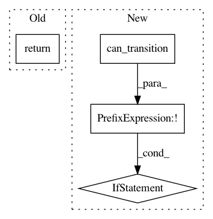

26d237186b852c342691aedfe81ac23851445f03,polyaxon/scheduler/tasks/notebooks.py,,projects_notebook_start,#Any#,50
Before Change
image_name, image_tag = get_image_info(build_job=notebook_job.build_job)
except ValueError as e:
_logger.warning("Could not start the notebook, %s", e)
return
job_docker_image = "{}:{}".format(image_name, image_tag)
_logger.info("Start notebook with built image `%s`", job_docker_image)
notebook_scheduler.start_notebook(notebook_job, image=job_docker_image)
After Change
_logger.warning("Notebook does not exist anymore.")
return None
if not JobLifeCycle.can_transition(status_from=notebook_job.last_status,
status_to=JobLifeCycle.SCHEDULED):
_logger.info("Notebook `%s` cannot transition from `%s` to `%s`.",
notebook_job.unique_name, notebook_job.last_status, JobLifeCycle.SCHEDULED)
notebook_scheduler.start_notebook(notebook_job)
@celery_app.task(name=SchedulerCeleryTasks.PROJECTS_NOTEBOOK_STOP, ignore_result=True)
In pattern: SUPERPATTERN
Frequency: 3
Non-data size: 4
Instances
Project Name: polyaxon/polyaxon
Commit Name: 26d237186b852c342691aedfe81ac23851445f03
Time: 2018-06-07
Author: mouradmourafiq@gmail.com
File Name: polyaxon/scheduler/tasks/notebooks.py
Class Name:
Method Name: projects_notebook_start
Project Name: polyaxon/polyaxon
Commit Name: e0fc7005738c0185768f67cc4fc67f6dc3ee5fb1
Time: 2018-09-19
Author: mouradmourafiq@gmail.com
File Name: polyaxon/db/models/build_jobs.py
Class Name: BuildJob
Method Name: set_status
Project Name: polyaxon/polyaxon
Commit Name: 26d237186b852c342691aedfe81ac23851445f03
Time: 2018-06-07
Author: mouradmourafiq@gmail.com
File Name: polyaxon/scheduler/tasks/tensorboards.py
Class Name:
Method Name: tensorboards_start